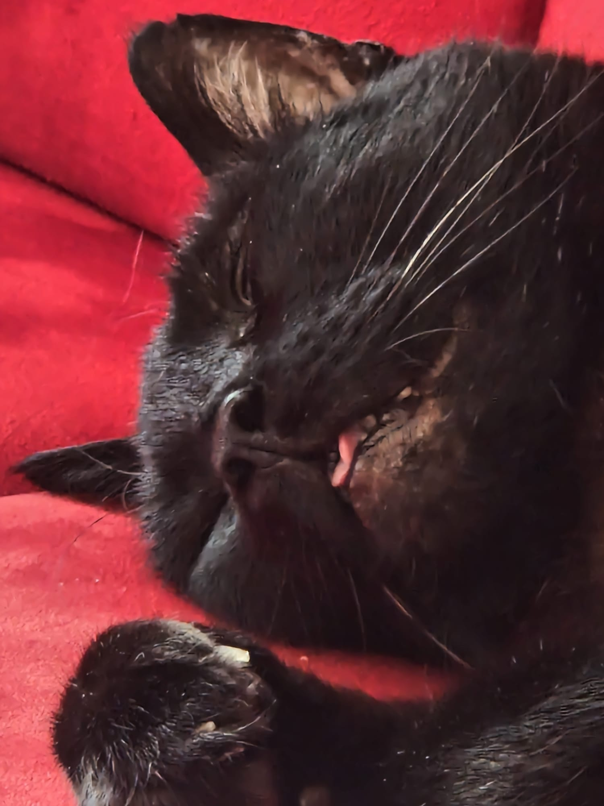

Final assignment ideas
- Core Concept: A multi-page travel ecosystem that functions as
a personal travel diary and a strategic trip planner.
- navigation through a geographic hierarchy:
Continent → Country → City → Individual Spot (Sights, Nature, Dining).
- key features:
- Spot Logging: uploads including photos, personal ratings, and direct Google Maps integration.
- Smart Tagging System: Categorization of locations using functional tags (e.g., "Social," "Bar," "Brunch," "Nature") for easy filtering.
- Interactive Mapping: Dynamic map views displaying pins for all logged locations at the city or country level.
- Future Trip Planner: A dedicated space to save, organize, and rank bucket-list spots for upcoming travels, including "ideal stay duration" suggestions.
and here is some experiments from class:
this is super cool website content :)

LOOK AT THIS CUTIE KITTEN!!!!
Find out more about black cats!!

This is my cat, Ben. He is a black cat and he is very cute! (and not dead, its just the photo)
Reasons why Ben is the best cat in the world:
- He is very cute
- He is very dumb
- He is very hungry